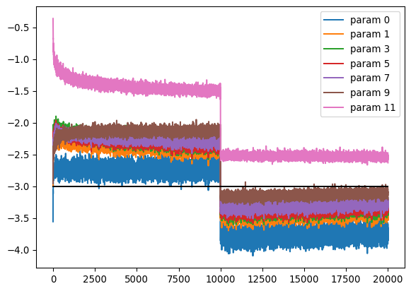

import torch
import numpy as np
import matplotlib.pyplot as plt
import torch.nn.functional as F
import randomDeveloping a character-prediction n-gram model using MLP - version 4
Learning goals
In this notebook, we will implement the ideas from version 3 - using a MLP as defined in Bengio et al. 2003 paper, but with the following modifications: - We will pytorch-ify the code that we wrote in the previous notebook, which means we will write classes as available in pytorch and use them to build our neural network. We will then compare our code with the classes directly available from pytorch. - We will use ideas developed previously to normalize the statistics of all parameters in the neural network at initialization and during training so that our neural networks are well-behaved. Namely, we will use Kaiming initialization and BatchNorm. - We will visualize activation statistics using some graphs.
Import dependencies
Write the layer modules
g = torch.Generator().manual_seed(624896294)
class Linear:
def __init__(self, fan_in, fan_out, bias = True):
self. weight = torch.randn((fan_in, fan_out), generator = g) / (fan_in)**0.5 # kaiming initialization for linear layer
self.bias = torch.zeros(fan_out) if bias else None
def __repr__(self):
if self.bias is not None:
return (f"Linear Module with weight {self.weight.shape} and bias {self.bias.shape}")
else:
return (f"Linear Module with weight tensor of shape {self.weight.shape} and no bias")
def __call__(self, x):
assert (x.shape[1] == self.weight.shape[0]), "Tensor dimensions of input and weight do not match"
self.out = x @ self.weight
if self.bias is not None:
self.out += self.bias
return self.out
def parameters(self):
return [self.weight] + ([self.bias] if self.bias is not None else [])
class Tanh:
#def __init__(self): # Do not define __init__ here otherwise there is a strange behaviour where the __call__ function does not work properly.
# pass
def __call__(self, x):
self.out = torch.tanh(x)
return self.out
def parameters(self):
return []
class BatchNorm1d:
def __init__(self, dim, eps=1e-5, momentum = 0.01):
self.eps = eps
self.momentum = momentum
self.training = True # Training mode on by default
# parameters trained by backpropagation
self.gamma = torch.ones(dim)
self.beta = torch.zeros(dim)
# buffers
self.running_mean = torch.zeros(dim)
self.running_var = torch.ones(dim)
def __call__(self, x):
# calculate the forward pass
if self.training:
xmean = x.mean(0, keepdim = True)
xvar = x.var(0, keepdim = True)
else:
xmean = self.running_mean
xvar = self.running_var
xhat = (x - xmean)/torch.sqrt(xvar + self.eps)
self.out = self.gamma * xhat + self.beta
# update buffers when in training mode
if self.training:
with torch.no_grad():
self.running_mean = (1-self.momentum) * self.running_mean + self.momentum * xmean
self.running_var = (1-self.momentum) * self.running_var + self.momentum * xvar
return self.out
def parameters(self):
return [self.gamma, self.beta]Making sure that classes are functioning correctly
layer = Linear(10, 100)
x = torch.randn(1,10)
x
layer(x)
layer.out
output = layer(x)
output
layer.out
layer(x)tensor([[ 1.5364, 1.1008, 0.6801, -0.8732, -0.0804, 0.3588, -0.0735, -0.5866,
-1.5123, -0.1502, -0.2993, 0.7791, 0.5864, 0.3464, -0.3647, 0.0086,
0.3059, 0.4902, -1.0106, 0.7067, -1.1972, 1.6645, 1.1225, 1.6618,
-0.2274, 1.3328, 0.3443, -0.9262, -2.4219, 0.4966, -0.4448, -1.1617,
-1.3011, 3.4188, -1.5425, -1.8543, 1.5152, 0.5720, 2.4803, -0.6724,
-0.1238, 0.3791, 0.7917, 0.4689, 1.2362, -0.6892, 2.5524, -0.9662,
-0.8996, -2.2958, 0.0580, -1.1694, -0.2603, 0.5632, 1.9475, 0.9060,
-1.1393, -0.1243, 0.9186, -0.7670, 1.1097, -0.2054, 0.7202, 0.9093,
0.7103, -1.6958, 1.1773, -0.2015, -0.1030, -0.2015, 0.2047, 1.3206,
0.9013, -0.9005, -1.8694, -1.7359, 0.8012, 0.9783, 2.3940, 0.3321,
1.6756, -1.5495, -1.8920, 0.3881, 2.0707, 0.9948, 1.4697, -1.8040,
0.4849, -0.5953, -1.8364, -2.1612, -0.8750, 0.9375, -2.5965, -0.9478,
-0.2767, 0.5670, -1.0999, 0.7404]])layer = Tanh()
linear_o = layer(x)
linear_o
#layer.parameters()
layer(x)tensor([[ 0.8256, 0.0634, -0.4017, 0.5966, -0.7783, -0.5697, 0.9567, -0.3762,
0.9936, 0.3960]])layer = BatchNorm1d(dim = 15) # dim = number of neurons in the layer. a mean and variance will be calculated for each neuron by taking values from the whole mini-batch
layer.__class__
x = torch.randn(10, 15) # The second dimension here must match the dim parameters of the BatchNorm1d layer.
x.shape
batch_norm_output = layer(x)
print(x.mean(dim = 0, keepdim = True), layer.running_mean, sep = "\n")
print(x.var(dim = 0, keepdim=True), layer.running_var, sep = "\n")
len(layer.parameters()), sum(p.nelement() for p in layer.parameters())tensor([[-0.0813, 0.1492, -0.0351, -0.1641, 0.0820, 0.0047, -0.3797, 0.0486,
-0.0100, 0.3744, 0.1040, -0.3042, -0.1230, -0.1558, 0.1535]])
tensor([[-8.1280e-04, 1.4920e-03, -3.5149e-04, -1.6408e-03, 8.2001e-04,
4.7139e-05, -3.7967e-03, 4.8633e-04, -1.0007e-04, 3.7441e-03,
1.0404e-03, -3.0420e-03, -1.2295e-03, -1.5577e-03, 1.5353e-03]])
tensor([[0.9169, 0.6258, 0.5444, 0.6365, 2.0632, 1.6782, 0.9885, 1.5326, 1.2594,
1.3816, 0.7351, 1.3348, 0.9305, 0.2655, 0.6597]])
tensor([[0.9992, 0.9963, 0.9954, 0.9964, 1.0106, 1.0068, 0.9999, 1.0053, 1.0026,
1.0038, 0.9974, 1.0033, 0.9993, 0.9927, 0.9966]])(2, 30)read the words, define the vocabulary and build mapping from vocabulary to integers
with open("data/names.txt") as file:
words = file.read().splitlines()
len(words)
# Build a character vocabulary
all_chars = sorted(list(set(''.join(words)+"*")))
# Build a mapping dictionary
stoi = {s:i for i,s in enumerate(all_chars)}
itos = {i:s for s,i in stoi.items()}Build MLP using the above modules
n_hidden = 100
embed_size = 10
vocab_size = len(all_chars)
mini_batch_size = 32
context_length = 3Build the training data
def build_dataset(words):
xs = []
ys = []
for word in words:
context = ['*']*context_length
chs = word+'*'
#ch_list = [ch for ch in chs]
#print(ch_list)
for ch in chs:
#print(ch)
#print(''.join(context), ch)
xs.append([stoi[s] for s in context])
ys.append(stoi[ch])
context = context[1:]+[ch]
xs = torch.tensor(xs)
ys = torch.tensor(ys)
return xs, ys
random.shuffle(words)
n1 = int(0.8*len(words))
n2 = int(0.9*len(words))
n1, n2
xstr, ystr = build_dataset(words[:n1])
xsdev, ysdev = build_dataset(words[n1:n2])
xstest, ystest = build_dataset(words[n2:])ystr[:10], xstr[:10](tensor([10, 4, 13, 18, 17, 12, 1, 25, 4, 22]),
tensor([[ 1, 1, 1],
[ 1, 1, 10],
[ 1, 10, 4],
[10, 4, 13],
[ 4, 13, 18],
[13, 18, 17],
[18, 17, 12],
[ 1, 1, 1],
[ 1, 1, 25],
[ 1, 25, 4]]))Build the neural network
Intialize
# Initialize the embedding layer
C = torch.randn((vocab_size, embed_size), generator = g)
layers = [
Linear(context_length*embed_size, n_hidden), Tanh(),
Linear(n_hidden, n_hidden), Tanh(),
Linear(n_hidden, n_hidden), Tanh(),
Linear(n_hidden, n_hidden), Tanh(),
Linear(n_hidden, n_hidden), Tanh(),
Linear(n_hidden, vocab_size),
]
# Perform proper initialization
with torch.no_grad():
# make last layer less confident
layers[-1].weight *= 0.1
# Apply gain to all other layer weights at initialization
for layer in layers[:-1]:
if isinstance(layer, Linear):
layer.weight *= 5/3
# Collect all the parameters
parameters = [C] + [p for layer in layers for p in layer.parameters()]
print(sum(p.nelement() for p in parameters)) # total number of parameters in the network
for p in parameters:
p.requires_grad = True
# for layer in layers[0:1]:
# print(layer.weight)46830Train the network
max_steps = 200000
lossi = []
ud = []
for i in range(max_steps):
# sample indices from minibatch
ix = torch.randint(0,xstr.shape[0], (mini_batch_size,), generator = g)
Xb, Yb = xstr[ix], ystr[ix]
# forward pass
emb = C[Xb] # embed characters into vectors
x = C[Xb].view(emb.shape[0], context_length*embed_size) # concatenate the vecotrs
#print(x)
for layer in layers:
x = layer(x)
#print(x)
loss = F.cross_entropy(x, Yb) # loss function
# backward pass
for layer in layers:
layer.out.retain_grad() # required for plotting the gradient of the layer output later on. Not required for actual training
for p in parameters:
p.grad = None
loss.backward()
# update parameters
lr = 0.2
if i < 10000:
lr = 0.2
elif 10000 <= i < 50000:
lr = lr/10
else:
lr = lr/100 # step learning rate decay
for p in parameters:
p.data += -lr * p.grad
# track statistics
if i % 10000 == 0:
print(f'{i:7d}/{max_steps:7d}: {loss.item():.4f}')
lossi.append(loss.log10().item())
with torch.no_grad():
ud.append([(lr*p.grad.std() / p.data.std()).log10().item() for p in parameters])
if i > 20000:
break 0/ 200000: 3.3961
10000/ 200000: 2.2095
20000/ 200000: 2.0469My initial loss is very high, despite using Kaiming initialization. So, I will use some graphs to visualize the statistics at initialization. I discovered a big where instead of dividing by a factor of sqrt(fan_in), I was multiplying by that number. Therefore, all my tanh outputs were saturated.
Statistics to monitor at initialization
Look at the % saturation of the non-linear layers
plt.figure()
legends = []
for i, layer in enumerate(layers[:-1]):
if isinstance(layer, Tanh):
t = layer.out
#print(t.shape)
print(f'layer {i} ({layer.__class__.__name__}): mean: {t.mean():.2f}, std: {t.std():.2f}, saturated: {(t.abs()>0.97).float().mean()*100:.2f}')
hy, hx = torch.histogram(t, density = True)
plt.plot(hx[:-1].detach(), hy.detach())
legends.append(f'layers {i} ({layer.__class__.__name__})')
plt.legend(legends)
plt.title('activation distribution')layer 1 (Tanh): mean: -0.02, std: 0.79, saturated: 26.06
layer 3 (Tanh): mean: -0.03, std: 0.83, saturated: 34.06
layer 5 (Tanh): mean: 0.03, std: 0.85, saturated: 39.28
layer 7 (Tanh): mean: -0.03, std: 0.86, saturated: 42.06
layer 9 (Tanh): mean: -0.00, std: 0.70, saturated: 18.00Text(0.5, 1.0, 'activation distribution')Look at gradient values of the non-linear layers
We are looking to see if there is a nice distribution of gradients and that all gradients shouldn’t be squashed or too spread out.
plt.figure()
legends = []
for i, layer in enumerate(layers[:-1]):
if isinstance(layer, Tanh):
t = layer.out.grad
#print(t)
#print(t.shape)
print(f'layer {i} ({layer.__class__.__name__}): mean: {t.mean():+f}, std: {t.std():e}')
hy, hx = torch.histogram(t, density = True)
plt.plot(hx[:-1].detach(), hy.detach()) # detach function takes a value out of computational graph
legends.append(f'layers {i} ({layer.__class__.__name__})')
plt.legend(legends)
plt.title('layer gradient distribution')layer 1 (Tanh): mean: -0.000043, std: 2.312703e-03
layer 3 (Tanh): mean: +0.000039, std: 2.158476e-03
layer 5 (Tanh): mean: +0.000001, std: 2.411143e-03
layer 7 (Tanh): mean: +0.000080, std: 3.095581e-03
layer 9 (Tanh): mean: +0.000001, std: 3.749688e-03Text(0.5, 1.0, 'layer gradient distribution')Look at the ratio of gradient to data for each parameter
plt.figure()
legends = []
for i,p in enumerate(parameters):
t = p.grad
if p.ndim == 2: # Only look at weights parameters which are 2-D, and not biases-
print(f'weight {p.shape}, mean {t.mean():+f}, std {t.std():e}, grad:data ratio {t.std()/p.std():e}')
hy, hx = torch.histogram(t, density = True)
plt.plot(hx[:-1].detach(), hy.detach()) # detach function takes a value out of computational graph
legends.append(f'{i} ({p.shape})')
plt.legend(legends)
plt.title('weights gradient distribution')weight torch.Size([30, 10]), mean +0.000076, std 9.525701e-03, grad:data ratio 9.600798e-03
weight torch.Size([30, 100]), mean -0.000169, std 6.024467e-03, grad:data ratio 1.725856e-02
weight torch.Size([100, 100]), mean -0.000057, std 4.317877e-03, grad:data ratio 2.183542e-02
weight torch.Size([100, 100]), mean -0.000029, std 4.603472e-03, grad:data ratio 2.341276e-02
weight torch.Size([100, 100]), mean -0.000048, std 5.444612e-03, grad:data ratio 2.830733e-02
weight torch.Size([100, 100]), mean +0.000136, std 7.210550e-03, grad:data ratio 4.183877e-02
weight torch.Size([100, 30]), mean -0.000000, std 2.175156e-02, grad:data ratio 1.624523e-01Text(0.5, 1.0, 'weights gradient distribution')Look at the update to the data ratio
plt.figure()
legends = []
for i,p in enumerate(parameters):
t = p.grad
if p.ndim == 2: # Only look at weights parameters which are 2-D, and not biases-
plt.plot([ud[j][i] for j in range(len(ud))])
legends.append(f'param {i:d}')
plt.plot([0, len(ud)], [-3, -3], 'k') # these ratios should be ~1e-3
plt.legend(legends)
If we have no tanh layer, the correct gain for weights of each layer would be 1.
If gradients are too large compared to the data, then we would have a problem because we are updating the data with some fraction of the gradient.
If weights at initialization are high in one layer compared to other layers, then we would be training that layer faster compared to other layers, because it’s gradients would also be larger.
The ratio of update to data should not be too much above 1e-3. If it’s below 1e-3, it means our learning rate is too low. So for 10,000 iterations, our learning rate is too low.
To summarize: At initialization, you want all distributions of gradients and activations throughout all layers of neural network to be roughly Gaussian. - distribution of activations in the forward pass and % saturated values output from each non-linear layer. - distributions of the gradients flowing back through each non-linear layer. - distribution of gradient/data ratio in each layer during backward pass as well as mean and std of gradients - distribution of ratio of update value with the parameter value at each iteration.
let’s introduce the BatchNorm layer in the neural network
Initialization
g = torch.Generator().manual_seed(624896294)
# Initialize the embedding layer
C = torch.randn((vocab_size, embed_size), generator = g)
layers = [
Linear(context_length*embed_size, n_hidden, bias = False), BatchNorm1d(n_hidden), Tanh(),
Linear(n_hidden, n_hidden, bias = False), BatchNorm1d(n_hidden), Tanh(),
Linear(n_hidden, n_hidden, bias = False), BatchNorm1d(n_hidden), Tanh(),
Linear(n_hidden, n_hidden, bias = False), BatchNorm1d(n_hidden), Tanh(),
Linear(n_hidden, n_hidden, bias=False), BatchNorm1d(n_hidden), Tanh(),
Linear(n_hidden, vocab_size, bias = False), BatchNorm1d(vocab_size),
]
# Perform proper initialization
with torch.no_grad():
# make last layer less confident
# when we are using batchnorm, we would change gamma instead of weight.
layers[-1].gamma *= 0.1
#layers[-1].weight *= 0.1
# Apply gain to all other layer weights at initialization
for layer in layers[:-1]:
if isinstance(layer, Linear):
layer.weight *= 5/3
# Collect all the parameters
parameters = [C] + [p for layer in layers for p in layer.parameters()]
print(sum(p.nelement() for p in parameters)) # total number of parameters in the network
for p in parameters:
p.requires_grad = True47360Train the network
max_steps = 200000
lossi = []
ud = []
for i in range(max_steps):
# sample indices from minibatch
ix = torch.randint(0,xstr.shape[0], (mini_batch_size,), generator = g)
Xb, Yb = xstr[ix], ystr[ix]
# forward pass
emb = C[Xb] # embed characters into vectors
x = C[Xb].view(emb.shape[0], context_length*embed_size) # concatenate the vecotrs
#print(x)
for layer in layers:
x = layer(x)
#print(x)
loss = F.cross_entropy(x, Yb) # loss function
# backward pass
for layer in layers:
layer.out.retain_grad() # required for plotting the gradient of the layer output later on. Not required for actual training
for p in parameters:
p.grad = None
loss.backward()
# update parameters
lr = 0.2
if i < 10000:
lr = 0.2
elif 10000 <= i < 50000:
lr = lr/10
else:
lr = lr/100 # step learning rate decay
for p in parameters:
p.data += -lr * p.grad
# track statistics
if i % 10000 == 0:
print(f'{i:7d}/{max_steps:7d}: {loss.item():.4f}')
lossi.append(loss.log10().item())
#with torch.no_grad():
# ud.append([(lr*p.grad.std() / p.data.std()).log10().item() for p in parameters]) 0/ 200000: 3.3802
10000/ 200000: 2.0782
20000/ 200000: 1.9387
30000/ 200000: 2.1621
40000/ 200000: 2.2414
50000/ 200000: 2.4705
60000/ 200000: 2.3154
70000/ 200000: 1.6530
80000/ 200000: 2.0863
90000/ 200000: 1.9013
100000/ 200000: 1.6304
110000/ 200000: 1.8619
120000/ 200000: 2.2639
130000/ 200000: 2.0736
140000/ 200000: 1.8689
150000/ 200000: 2.1420
160000/ 200000: 1.7749
170000/ 200000: 2.1104
180000/ 200000: 2.1352
190000/ 200000: 2.0451The above neural network is much less sensitive to gain values. Therefore, if we change the gain, the activation and gradient statistics will remain well-behaved, but the update to data ratio will change and we may have to re-tune the learning rate. If we decrease the gain, some layers train faster. if we increase the gain, layers train slower. Think about why that is based on backpropagation through the batch-norm layer.
plt.plot(lossi)
Evaluate the trained model
- Calculate the loss for selected split of the data - train, dev, or test
@torch.no_grad() # this decorator disables gradient tracking
# We can also use a context manager (look this up)
def calculate_split_loss(split):
# get the appropriate x an y based on the desired data split
x,y = {
"train": (xstr, ystr),
"val":(xsdev, ysdev),
"test": (xstest, ystest)
}[split]
x = C[x].view(-1,context_length*embed_size)
#xembcat = xemb
for layer in layers:
if isinstance(layer, BatchNorm1d):
layer.training = False
x = layer(x)
loss = F.cross_entropy(x, y)
print(split, loss.item())
calculate_split_loss('train')
calculate_split_loss('val')train 1.9233191013336182
val 1.94981849193573Make predictions
start_char = "*"
end_char = "*"
g = torch.Generator().manual_seed(123434)
start_ind = stoi[start_char]
for _ in range(20):
context = [start_ind]*context_length
all_chars = [start_char]*context_length
while True:
# Now context contains the three character indices for our example
xp = C[torch.tensor(context)].view(1, -1) # Want to generate just one character at a time.
#print(xembp.shape)
for layer in layers:
if isinstance(layer, BatchNorm1d):
layer.training = False
xp = layer(xp)
#print(x.shape)
# Directly use the softmax function to calculate probabilites from logits
probsp = F.softmax(xp, dim = 1)
ind = torch.multinomial(probsp, num_samples = 1, replacement = True, generator = g)
ch = itos[ind.item()]
if (ch == end_char):
all_chars.append(ch)
break
else:
all_chars.append(ch)
context = context[1:]+[ind.item()]
print("".join(all_chars))***tivanshi*
***kaw*
***vida*
***mathvarman*
***aashathvi*
***lisharsha*
***baraj*
***aswitha*
***gar*
***sbithi naly*
***anosheesh*
***endusha*
***bhag*
***gana*
***napathuri*
***shutdhalakiya*
***yani*
***tar*
***gashwaduban*
***sany*